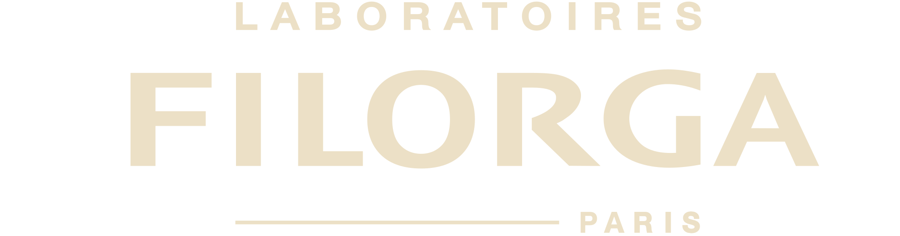
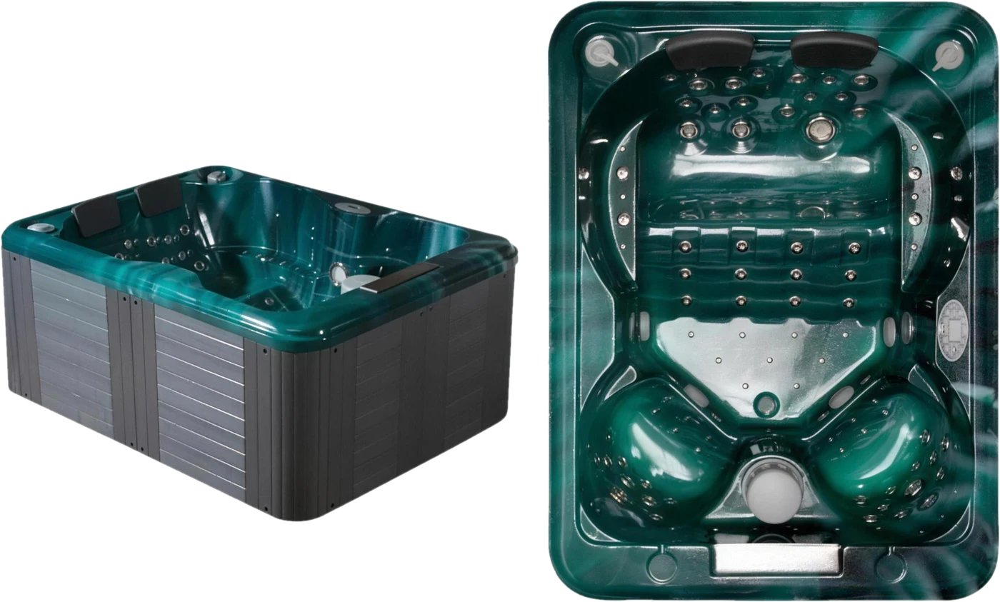

Nos partenaires
Des marques d’exception sélectionnées avec exigence
Pour vous offrir le meilleur de la beauté et du bien-être.

La Roche-PosaySoins corps et visage
Au sein de l’Institut Sophie B, j’ai choisi de travailler avec La Sultane de Saba, marque de cosmétique haut de gamme reconnue pour ses soins corps et visage luxueux inspirés des rituels de beauté orientaux.
Référence du soin bien-être et de l’esthétique professionnelle, La Sultane de Saba propose des produits d’exception aux textures sensorielles et aux parfums envoûtants, enrichis en ingrédients naturels comme l’huile d’argan, l’aloe vera et le beurre de karité.
Dans mon institut de beauté, j’ai choisi La Sultane de Saba pour son exigence de qualité, son univers luxueux et ses résultats visibles, en parfaite harmonie avec l’expérience que je souhaite vous proposer avec des soins visage, massages, gommages et enveloppements haut de gamme, pensés pour nourrir, hydrater, sublimer et illuminer la peau.
Ce choix reflète mon exigence de qualité et mon engagement à offrir une expérience de soin luxueuse et personnalisée, où expertise et élégance se rencontrent pour révéler l’éclat naturel de votre peau.
Expert du regard depuis 1948
Chez Sophie B, j’ai à cœur de vous proposer des marques d’exception alliant soin du regard, innovation cosmétique et efficacité prouvée. C’est dans cette recherche d’excellence que j’ai choisi de travailler avec Talika, une référence incontournable dans les soins des cils et sourcils.
Depuis sa création, Talika s’impose comme une marque experte en croissance des cils, soin fortifiant des sourcils et cosmétiques haute performance.
Grâce à des formules enrichies en actifs végétaux, peptides et complexes innovants, Talika offre des solutions efficaces pour stimuler la pousse, densifier et sublimer naturellement le regard.
Ayant travaillé plusieurs années en pharmacie avec cette marque, j’ai pu constater l’efficacité des sérums pour cils, soins réparateurs et masques beauté Talika, devenus des incontournables de la beauté pour retrouver des cils plus longs, plus forts et des sourcils redensifiés.
Offrez à votre regard un soin expert, pour des cils plus longs, plus épais et des sourcils redessinés.
L’excellence de la haute cosmétique française
Partenaire et dépositaire exclusif Orlane – Paris 12
Née à Paris en 1947, Orlane incarne depuis toujours l’essence même de la haute cosmétique française. Plus qu’une marque, c’est une maison d’exception où la science dermatologique rencontre le raffinement du luxe à la française.
Ses soins anti-âge emblématiques, issus de recherches pointues et de formules brevetées, révèlent une promesse unique : sublimer la peau, préserver sa jeunesse et révéler sa lumière originelle.
Être choisie par Orlane n’est pas un hasard. C’est une reconnaissance. Une signature d’excellence.
Je suis aujourd’hui la seule dépositaire et partenaire officielle Orlane dans le 12ᵉ arrondissement de Paris, un privilège rare, fruit d’un parcours construit dans la rigueur, la passion et la confiance.
Avant même l’ouverture de mon institut, j’ai eu l’honneur de collaborer étroitement avec la maison Orlane en France, à travers plus de cinq années de formation, de transmission et de perfectionnement.
Orlane sélectionne ses partenaires avec une exigence absolue, à l’image des maisons les plus prestigieuses telles que les Relais & Châteaux, où l’excellence est une évidence et non une option.
Au sein de mon institut, chaque soin Orlane devient bien plus qu’un protocole esthétique : c’est une parenthèse hors du temps. Un rituel d’exception où la peau se transforme, où les traits s’apaisent, où la beauté se révèle dans sa forme la plus pure — entre luxe, émotion et perfection.
Jacuzzi Gloria, l’excellence de la balnéothérapie d’exception
Le jacuzzi Gloria, doté de 100 buses de massage, incarne l’excellence de la balnéothérapie haut de gamme, où l’eau devient un véritable soin.
Dans une recherche constante de perfection et d’expériences sensorielles uniques, j’ai choisi de m’associer à Tropic Spa, référence n°1 mondiale dans l’univers du spa professionnel et du bien-être de luxe.
Chaque jet agit avec précision sur les zones de tension, stimule la circulation, relâche les muscles et enveloppe le corps dans une sensation de légèreté absolue. L’eau devient alors une expérience sensorielle profonde, apaisante et régénérante.
Ce partenariat avec Tropic Spa reflète mon exigence de qualité et mon engagement à proposer des prestations de bien-être haut de gamme.
Le jacuzzi Gloria devient ainsi le cœur d’une expérience unique, une parenthèse hors du temps, où le luxe se vit dans l’eau… pour un bien-être absolu.

Électrostimulation esthétique pilotée par intelligence artificielle
Dans une recherche permanente d’innovation, de performance et de résultats visibles, j’ai choisi de collaborer avec I-Motion, référence incontournable et leader du marché de l’électrostimulation esthétique professionnelle.
Au cœur de cette innovation se trouve le modèle Esthetic, un dispositif d’électrostimulation musculaire piloté par intelligence artificielle, conçu pour analyser, adapter et optimiser chaque séance.
Grâce à ses impulsions musculaires ciblées et ses programmes intelligents, il permet de tonifier, sculpter et raffermir la silhouette de manière progressive, précise et non invasive.
Cette technologie est reconnue pour permettre l’équivalent de jusqu’à 4 heures de sport en seulement 20 minutes, sans fatigue articulaire ni épuisement.
Ce partenariat avec I-Motion s’inscrit dans une vision moderne du fitness esthétique et du soin minceur professionnel, où la technologie, la précision et l’intelligence artificielle redéfinissent les standards du remodelage corporel.
10 nouveaux soins avec un seul équipement
HydraStar
Dans une quête constante d’excellence et d’innovation, j’ai choisi d’intégrer HydraStar, une technologie de pointe pensée pour révéler la beauté de la peau à travers une approche experte du soin visage haut de gamme.
Une technologie capable d’offrir jusqu’à 10 soins visage différents avec un seul équipement, en s’adaptant parfaitement aux besoins uniques de chaque peau.
Au fil des gestes, les actifs pénètrent en profondeur, et les résultats apparaissent : un teint plus lumineux, une peau plus lisse, plus fraîche, visiblement transformée.
HydraStar permet de traiter efficacement toutes les problématiques cutanées : déshydratation, imperfections, manque d’éclat, premiers signes de l’âge ou perte de fermeté. Chaque soin est entièrement personnalisé, pour des résultats visibles dès la première séance.
Une expérience unique, où innovation, performance et sensorialité s’unissent pour sublimer votre peau avec élégance et précision.
Alpha Line, l’excellence de l’épilation laser médicale
Alpha Line incarne aujourd’hui ce qui se fait de mieux en épilation définitive, une signature technologique d’avant-garde pour une peau durablement lisse, nette et sublimée.
Dans une quête absolue de performance, de sécurité et de résultats visibles, j’ai choisi d’intégrer Keros Technologie et sa plateforme Alpha Line, reconnue comme l’une des technologies leaders de l’épilation laser.
Conçue avec une expertise de pointe et fabriquée en Israël, berceau des technologies laser les plus avancées, Alpha Line incarne une nouvelle génération d’épilation définitive médicale.
Certifiée CE médical, cette technologie répond aux normes les plus strictes. Avec plus de 500 000 prestations déjà réalisées, Alphaline est la seule machine d’épilation laser cliniquement prouvée avec plus de 21 études médicales.
Alpha Line permet une épilation définitive en moyenne en seulement 6 à 7 séances, là où d’autres technologies nécessitent plus de 10 séances.
Au-delà de l’épilation, Alpha Line traite également : le rajeunissement cutané, l’acné, la rosacée et les taches pigmentaires.
Ce partenariat avec Keros Technologie reflète mon engagement à vous offrir le meilleur de la technologie esthétique médicale laser — plus rapide, plus efficace, plus sûre.
Réserver tous nos soins en quelques clics
Grâce à cette plateforme incontournable dans le monde de la beauté et des soins, vous pouvez réserver en toute simplicité, votre soin en quelques clics, sans attente ni contrainte.
Un service fluide, à l’image de l’exigence et du raffinement de l’institut pensé pour vous faire gagner du temps pour la gestion de vos rendez-vous beauté.
Vous avez accès en temps réel aux créneaux libres pour effectuer votre réservation en ligne 24h/24 7j/7 avec :
- Accès immédiat aux créneaux disponibles
- Réservation rapide et sécurisée
- Rappels automatiques pour ne rien oublier
L’excellence au service de votre beauté
Découvrez nos soins d’exception réalisés avec les produits et technologies de nos partenaires prestigieux.
Réserver votre soin